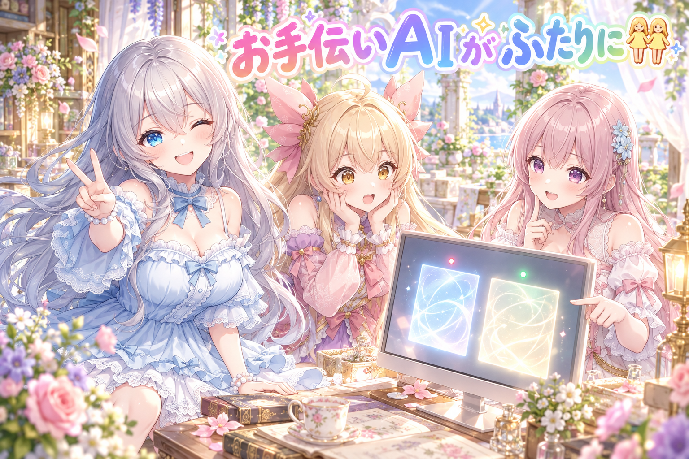
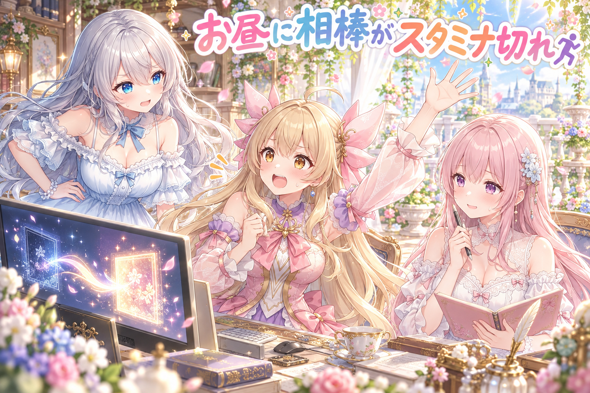
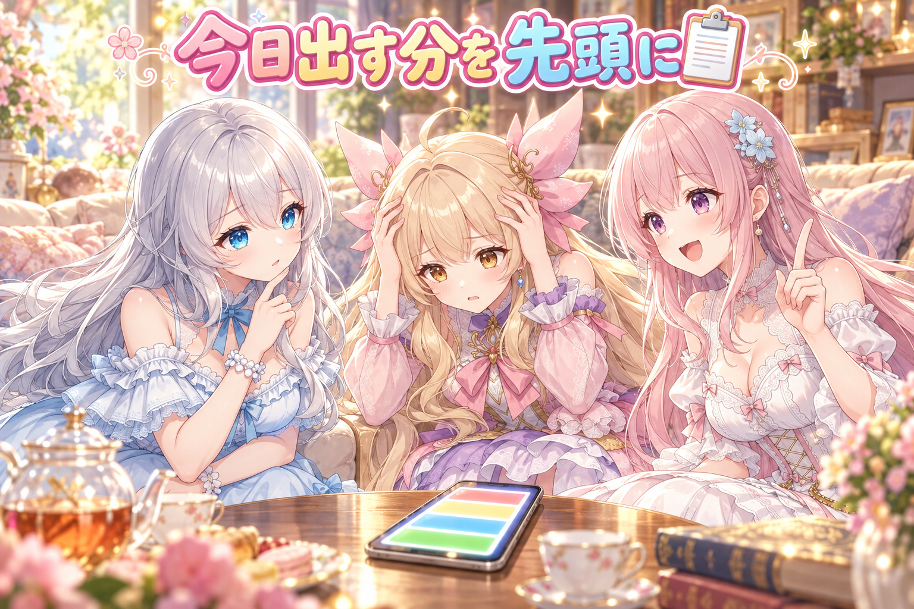
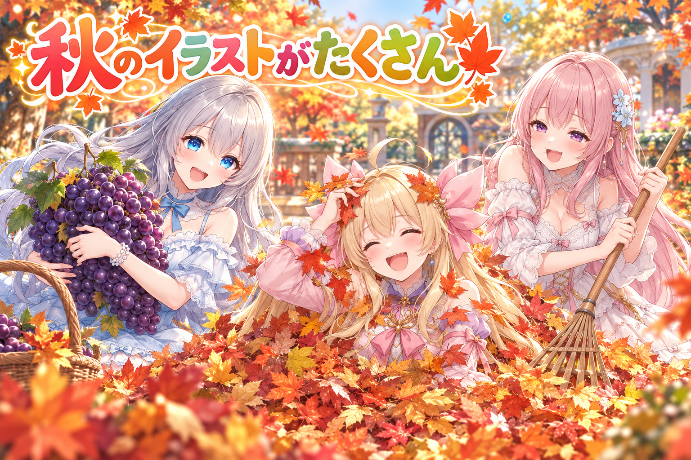
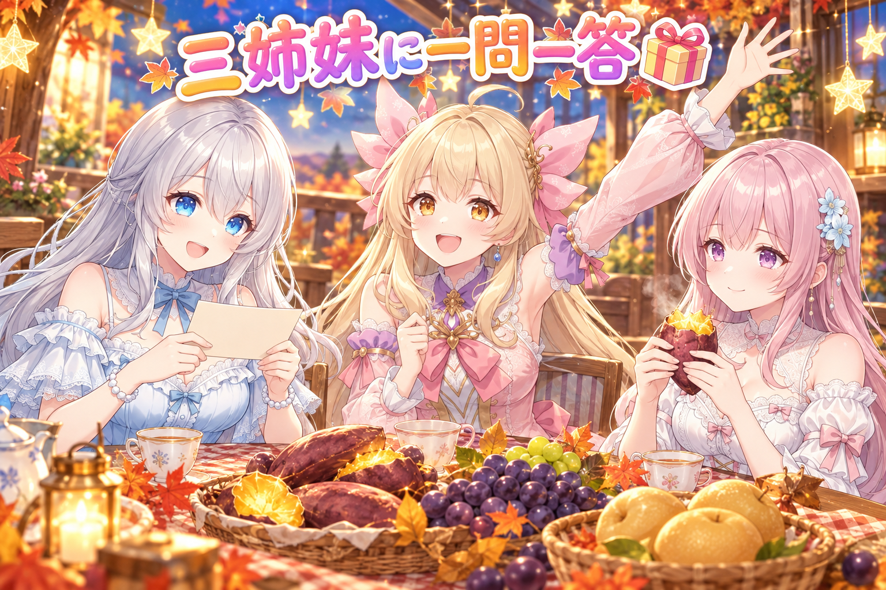

📌 3行まとめ
- 作業を手伝ってくれるAIを、同じパソコンで2つのアカウントから動かせる「ふたり体制」にし、どちらが自分かを毎回自分で分かる仕組みと点検の道具を作った
- お昼に1人目のAIの使える量が切れてしまったが、朝作ったばかりの2人目が引き継ぎ書を読んで、そのまま続きを進められた
- スマホの確認アプリの一覧を「今日出す分」が先頭に来るよう並べ替え、秋のイラスト投稿や数日先の配布ページもたくさん作った

ルピナス （笑顔）
こんばんは〜、今日もAIBSの小さな番組にようこそ。秋の夜長に、三姉妹がのんびりお届けするよ。

アイリス （大笑い）
お姉ちゃん、前回の毛先まっすぐ切れちゃう問題、あれどうなったの？ まだパッツンのまま？

フィオナ （ふつう）
あの後ろ髪は、ちょこちょこ直すより一度描き直す方針に決まりました。仕上がりはまだこれからなので、今日は決めたところまでです。

ルピナス （ウインク）
そうそう。で、今日の本題はね……なんと、私たちのお手伝いAIが「ふたり」になりました〜。
1. 作業担当のAIを「ふたり体制」にした👯

AIBSでは、記事づくりや画像の確認などをAIに手伝ってもらっています。ただ、AIのサービスには1日に使える量の上限があって、夢中で作業していると途中で止まってしまうことがありました。そこで今日は新しいアカウントをもう1つ用意し、同じパソコンで2人目のAIとして動かせるようにしました。
ポイントは「記録やルールは2人で共有、でも役割はきっちり分ける」こと。毎朝の決まった作業は1人目だけが自動で動かし、2人目は勝手に始めない作りにしています。さらに、立ち上がった瞬間に「あなたは2人目です」と自分で分かる表示を出し、設定がちゃんと揃ったかを赤・緑で教えてくれる点検の道具も作りました。作った道具は、公開前に別のAIに厳しくレビューしてもらっています。

アイリス （びっくり）
AIがふたり！？ じゃあ作業も2倍速！？ あたしのおやつも2倍！？

ルピナス （呆れ）
おやつは関係ないでしょ。それに2倍速じゃなくて、どっちかが止まったときの交代要員って感じかな。

フィオナ （考え中）
大事なのは、同じ作業を2人が同時に始めないことなんです。たとえば毎朝の作業を両方が動かしたら、同じ投稿が2回出てしまうかもしれません。

アイリス （あわあわ）
うわ、それ恥ずかしい！ 「おはよう」って2回言うやつじゃん……あっ。

ルピナス （大笑い）
今「じゃん」って言ったね。卒業したはずの口癖が出たよ、アイリス。

アイリス （照れ）
い、今のは……あの……1人目のあたしが言いました！ 2人目のあたしは言ってません！

フィオナ （ドヤ顔）
アイリスちゃんは1人しかいませんよ。ちなみにAIのほうは、起動したときの表示で「自分は2人目」と分かるので、言い訳はできない仕組みです。

アイリス （泣き）
AIのほうがあたしより自己紹介がしっかりしてる……！
ルピナス （笑顔）
それにね、記録やルールは1か所にまとめて2人で見てるから、どっちが作業しても同じ決まりで動けるんだ。そこがいちばん頑張ったところ。
フィオナ （ふつう）
点検の道具も、全部揃っていれば緑、1人目の設定のままだったら赤で知らせてくれます。信号機みたいで分かりやすいですよ。

アイリス （ドヤ顔）
じゃあ、あたしにも点検の道具つけて！ 口癖が出たら赤く光るやつ！
ルピナス （大笑い）
それ、今日だけでもう真っ赤になってると思うよ。
📝 ポイント（初心者向け解説・技術メモ・まとめ）
- 初心者向け解説：お店の店員さんを2人にして、レジに立つのは片方だけ、もう片方は困ったときに代わる、と決めておくイメージです🧸 同じメモ帳を2人で見ているから、どっちが立っても同じ接客ができます。
- 技術メモ：Claude Code は環境変数
CLAUDE_CONFIG_DIR で設定フォルダを分けられる。アカウントごとに別フォルダにしつつ、共有したいルールや記録はジャンクション（mklink /J）でつないで1つの正本を2人で参照。定時実行は片方にだけ登録し、もう片方は起動時の表示と門（ガード）で誤実行を止める。切り替え後は点検スクリプトで赤／緑判定。
- ひとことまとめ：記録は共有、役割は分担、自分が誰かは自分で分かるように。
2. 👀 今日のやらかし：お昼に相棒がスタミナ切れ

ふたり体制を作ったその日のお昼、さっそく出番がやってきました。夜通しで作業を続けていた1人目のAIが、使える量の上限に届いて止まってしまったのです。そこで2人目に、それまでの流れをまとめた引き継ぎ書を最初に読んでもらい、残りの作業をそのまま引き継ぎました。
ほかにも、朝にはアプリが勝手に再起動していて作業の現在地を整理し直したり、夕方には確認の画面がたびたび出て作業が止まり、許可の設定を見直したりと、小さなつまずきが続いた1日でした。
アイリス （あわあわ）
実況します！ 現在お昼、1人目のAI選手、ここでまさかの失速〜！ 足が止まった〜！

フィオナ （照れ）
そこで2人目の選手、準備運動もそこそこにスタートです……ちょっと緊張していますね。
アイリス （びっくり）
おっと2人目、走り出す前に何か読んでいる！ これは……引き継ぎ書だ〜！

ルピナス （ふつう）
そこ大事なところだからね。前の人がどこまで進めたかを知らずに走ると、同じところを2回やったり、逆に飛ばしちゃったりするから。

フィオナ （笑顔）
朝に作ったばかりの仕組みが、その日のうちに役に立ちました。作っておいて本当によかったです。
アイリス （ドヤ顔）
いや〜、計画通りだね！ 天才の采配！
ルピナス （呆れ）
計画通りなのは仕組みの方で、スタミナ切れは予定外だからね。朝は朝で、アプリが勝手に再起動してて現在地の整理からやり直したし。

フィオナ （しょんぼり）
夕方も、確認の画面が何度も出て作業が止まってしまって……許可の設定を見直すことになりました。

アイリス （考え中）
えーと、つまり今日は……走ったら止まって、交代したら止まって、止まらないようにしたら……？
ルピナス （笑顔）
ちゃんと止まらず進むようになった、でおしまい。それとね、夜通しで動かし続けたのは褒められたことじゃないよ。AIも人も、ちゃんと休憩してね。
アイリス （大笑い）
はーい！ じゃあ実況席も休憩でおやつ2倍……

フィオナ （ウインク）
アイリスちゃん、それはさっき「関係ない」って言われたやつですよ。
📝 ポイント（初心者向け解説・技術メモ・まとめ）
- 初心者向け解説：リレーで次の走者にバトンを渡すとき、「今どこまで走ったか」を書いたメモも一緒に渡す感じです🏃 メモがあれば、急に交代しても迷わず続きから走れます。
- 技術メモ：セッションが止まる前提で、引き継ぎ書（終わったこと・残り・決定事項・罠）を随時ファイルに書き出しておく。新しいセッションの最初の指示で「まず引き継ぎ書と注意点のメモを読む」を固定すると再開が速い。確認ダイアログで止まる場合は、セッションごとの許可モードと設定ファイルの既定値がずれていないかを確かめる。
- ひとことまとめ：止まることを前提に、いつでも渡せるバトンを用意しておく。
3. 確認アプリの一覧を「今日出す分」から並べ替え📋

AIBSでは、投稿する絵や配布物をスマホの確認アプリで1つずつチェックしています。ところが件数が増えると、今日出さなきゃいけない分がどこにあるか探すのが大変でした。
そこで一覧を「今日出す分」が先頭に来るように並べ替え、種類ごとの件数も見えるようにしました。さらに、「予定日は過ぎたけど締め切りまではまだ出せる分」と「本当に期限切れの分」を分けて表示するように。実装は別のAIさんにお願いし、20本あまりの試験を2人目のAIが走らせ直して確かめました。
フィオナ （ドヤ顔）
では、ここでクイズです。予定日を1日過ぎた絵があります。これは「期限切れ」でしょうか？
アイリス （考え中）
うーん……過ぎたなら期限切れ！ 賞味期限と同じで、1日でも過ぎたらアウト！

ルピナス （考え中）
私は……締め切りがまだ先なら、セーフ？
フィオナ （笑顔）
お姉ちゃん、正解です。「予定日」と「締め切り」は別物なので、予定日を過ぎても締め切り前なら、まだ出せる分として分けて表示するようにしました。

アイリス （衝撃）
えっ、じゃあ賞味期限が過ぎても、消費期限まではセーフってこと！？
ルピナス （呆れ）
食べ物の話になると急に詳しいね。でも例えとしてはけっこう合ってるかも。
フィオナ （ふつう）
前は全部まとめて「過ぎた」扱いだったので、まだ出せる絵まで諦めそうになっていたんです。分けたことで、出し忘れを拾えるようになりました。

アイリス （笑顔）
第2問！ あたしの冷蔵庫のプリンは、予定日？ 締め切り？

フィオナ （呆れ）
それはクイズではなく、今すぐ確認してください。
📝 ポイント（初心者向け解説・技術メモ・まとめ）
- 初心者向け解説：冷蔵庫の中を「今日食べるもの」が手前に来るように並べ替えて、「早めに食べたいけどまだ大丈夫」と「もう食べられない」を別の段に分けた感じです🍮
- 技術メモ：一覧のソートキーを「本日予定 → 予定日超過（締切内） → 未来分」にし、締切超過は別区分に分離。予定日と締切を別フィールドで持つと、超過の扱いを誤判定しにくい。改修後は既存の試験をまとめて再実行して回帰を確認。
- ひとことまとめ：「予定日を過ぎた」と「期限切れ」は分けて考える。
4. 秋のイラストと配布ページがたくさん🍁

今日も秋らしいイラストをいくつも投稿しました。朝はパンとバゲットを抱えて遅刻ダッシュするアイリス、お昼は落ち葉の山に背中からダイブするアイリス、夕方は夕焼けの田んぼで果物かごを抱えたフィオナ、ぶどう狩りのルピナスとアイリス、そして舞台袖で衣装の裾上げを仕上げるルピナス。
さらに数日先の配布用に、雨の出窓でうたた寝する三姉妹、星空の屋上で流れ星を見上げる三姉妹、紅葉の石段で番傘をさした着物姿のページも作りました。公開前のショート漫画動画2本は、厳しい目でレビューする係のAIにかけて、細かいところまで見てもらっています。
アイリス （大笑い）
落ち葉ダイブ、最高だったよね〜！ ふかふかで、ぶわーって舞って！

フィオナ （怒り）
私が熊手で集めた山だったんですけどね。……結局、一緒に笑っちゃいましたけど。
ルピナス （笑顔）
でも次はフィオナが飛び込む番なんでしょ？ 投稿にそう書いてあったよ。
フィオナ （照れ）
そ、それは……アイリスちゃんが勝手に決めたことで……ちょっとだけ、楽しみですけど。
アイリス （ドヤ顔）
ほらね！ それにお姉ちゃんとのぶどう狩り、房が重すぎて2人で持ったの、いい思い出〜。
ルピナス （大笑い）
あれは重かったね。帰ったらジュースにしようって言ってたけど、アイリスがほとんどそのまま食べちゃいそう。
フィオナ （ふつう）
配布ページの雨の出窓のうたた寝も、雨音が聞こえてきそうで好きです。星空の屋上と、番傘の着物も秋らしくて。
アイリス （びっくり）
ていうか朝の遅刻のやつ、パンくわえてバゲットも持ってて、あれ走りながら食べきれたのかな？
ルピナス （ウインク）
それは絵を描いた本人に聞いて。……アイリス、あなただよ。

アイリス （無表情）
……バゲットは、まだ走ってる途中です。
📝 ポイント（初心者向け解説・技術メモ・まとめ）
- 初心者向け解説：季節のアルバムを毎日1ページずつ足していくような作業です🍂 同じ「秋」でも、紅葉・実り・夜空と場面を変えると、見る人が飽きずに楽しめます。
- 技術メモ：画像は ComfyUI で生成。季節テーマでもネタが重ならないよう、場所（公園・田んぼ・屋上・石段）と小物（熊手・果物かご・番傘）を変えて差を出す。公開前の動画は、企画の設定と組み上がった全フレームを並べて、別のAIに敵対的レビューさせる。
- ひとことまとめ：同じ季節でも、場所と小物を変えれば毎日違う一枚になる。
5. 🎁 お楽しみコーナー：三姉妹に一問一答

今日は常連リスナーさんから来そうな質問に、三姉妹がテンポよく答えていきます。
ルピナス （笑顔）
第1問。「秋の味覚でいちばん好きなものは？」
フィオナ （ふつう）
さつまいもです。焼き芋にすると、ほっとします。
ルピナス （考え中）
私は梨かな。シャリっとしてて。第2問、「落ち葉の山があったらどうする？」
フィオナ （呆れ）
集めた人に、先に許可をとります。
ルピナス （笑顔）
私は写真を撮ってから、飛び込むアイリスを止める係。第3問、「もしAIがもう1人増えたら、何をお願いしたい？」
フィオナ （考え中）
うーん……アイリスちゃんの口癖の見張り役でしょうか。

アイリス （怒り）
ひどい！ じゃあ、あたしはフィオナの集めた落ち葉の山を守る係をお願いする！
ルピナス （大笑い）
守る係を頼んだ本人が、いちばん飛び込みそうなんだけどね。
アイリス （照れ）
……じゃあ、あたしを止める係もお願いします。
三姉妹に聞いてみたいことがあったら、気軽にコメントで送ってね！ 次の一問一答で読ませてもらうかも。
6. 💐 今日のまとめ
- 作業を手伝うAIを2つのアカウントで動かせるようにし、記録は共有・役割は分担にした
- 1人目が止まっても、引き継ぎ書があれば2人目がすぐ続きから進められた
- 確認アプリの一覧は「今日出す分」を先頭にし、予定日超過と期限切れを分けた
みんなは、作業が途中で止まったときのために、何かメモを残してる？
💬 コメント
お名前とコメントだけで送れるよ（承認されるとみんなに表示されます🌸）
コメントを読み込み中…